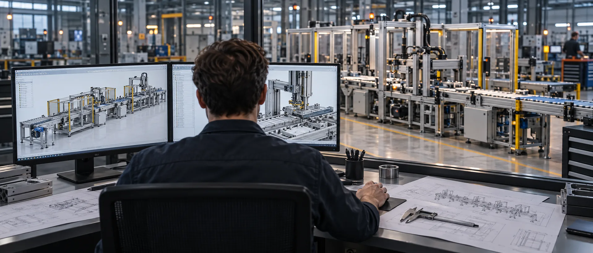

03 / ENGINEERING설계의 의도를
설계의 의도를
부품의 치수까지.
구조 설계부터 동작 확인까지 하나의 기준으로 연결합니다.
AXIOM ENGINEERING설비 콘셉트 비주얼
DESIGN TO FLOOR도면에서 현장까지
도면에서 현장까지
끊기지 않는 제작 과정.
설계 변경은 부품과 제어, 설치 공간에 영향을 줍니다. 단계마다 무엇을 확인할지 정하고, 다음 공정으로 넘어가기 전에 맞춰 봅니다.

설계 검토구조와 동작을
함께 봅니다.
함께 봅니다.
PROCESS / 04 STAGES기준을 먼저 맞추고,
기준을 먼저 맞추고,
현장에서 끝까지 확인합니다.
01 / REQUIREMENTS
목표 생산량, 제품 형상, 설치 공간, 기존 라인과의 연결 조건을 함께 확인합니다. 처음에 기준을 명확히 해야 제작 이후의 변경을 줄일 수 있습니다.
QUALITY CHECK납품 전의 한 번보다
납품 전의 한 번보다
제작 중의 여러 번.
주요 부품은 조립 전 치수와 체결 상태를 확인합니다. 완성된 설비는 반복 동작, 안전 인터록, 실제 작업 조건을 기준으로 점검합니다.
- 01부품 확인
- 02조립 점검
- 03동작 테스트
- 04현장 시운전